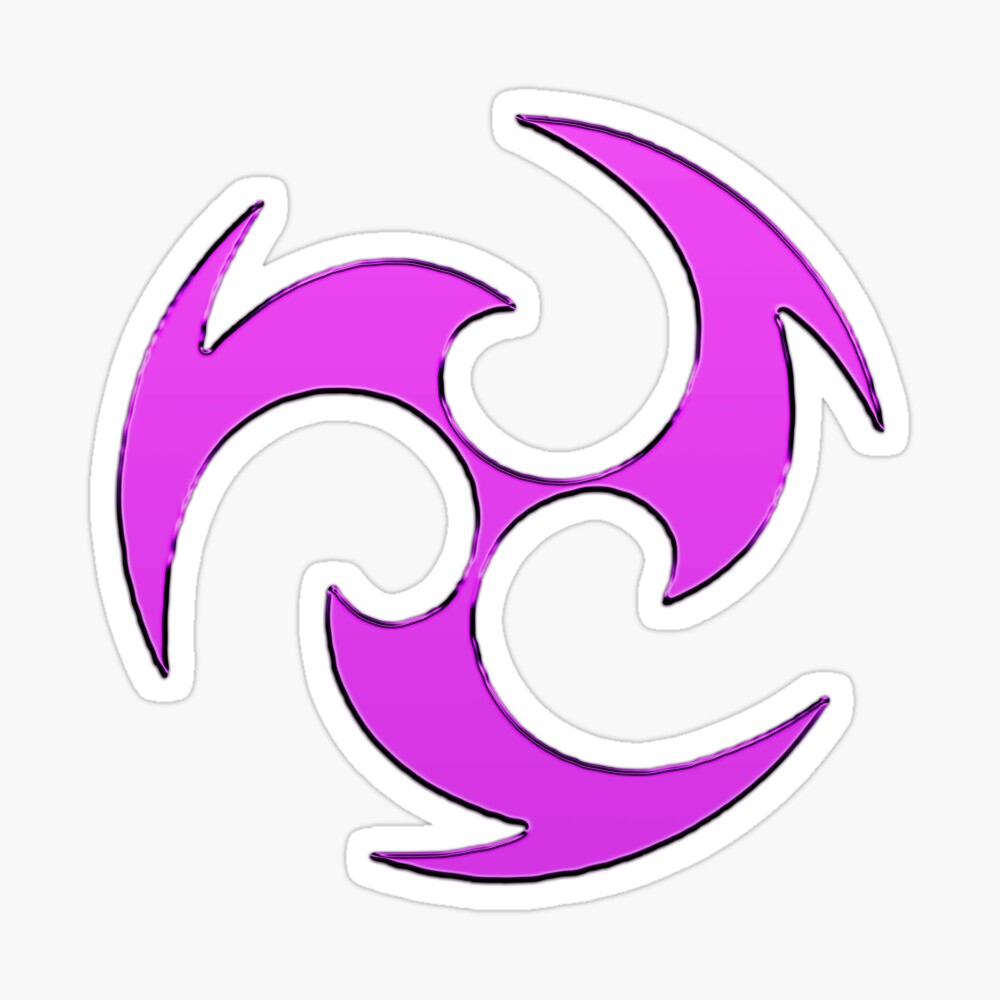

O que são os sete elementos ?
Existem sete elementos principais que os personagens podem manipular. Cada elemento possui características únicas e pode ser utilizado para combinar ataques e criar reações elementares. Os elementos em Genshin Impact são:
1.Geo:
O elemento Geo é um dos sete elementos que os personagens podem controlar. O elemento Geo está associado à terra e à manipulação de rochas, minerais e elementos relacionados ao solo. Os personagens que têm afinidade com o elemento Geo podem invocar escudos protetores, criar estruturas defensivas e controlar o terreno para causar dano aos inimigos. Os ataques elementares do elemento Geo geralmente envolvem a criação de rochas para atingir os oponentes ou a criação de estruturas defensivas que podem bloquear ataques inimigos. Além disso, os personagens Geo têm a habilidade de gerar Cristais Geo, que podem ser coletados e usados para recarregar a energia elemental de outros personagens. Alguns dos personagens que podem controlar o elemento Geo em Genshin Impact são: Traveler (Viajante), Noelle, Ningguang e Zhongli. Cada personagem possui habilidades únicas e estilos de jogo diferentes, mesmo compartilhando o mesmo elemento.
2.Cryo:

Cryo é um dos sete elementos presentes no jogo. É um elemento baseado no gelo e na frieza, representado pela cor azul. Os personagens que possuem o elemento Cryo são capazes de manipular o frio e o gelo para congelar, congelar e danificar os inimigos, além de criar efeitos de reação elementar com outros elementos. Os ataques Cryo são eficazes contra os inimigos Pyro (fogo), causando dano aumentado, enquanto são menos efetivos contra inimigos Electro (elétrico). Além disso, a habilidade Cryo de congelar pode ser usada para criar plataformas de gelo e atravessar corpos d'água. Alguns personagens notáveis que utilizam o elemento Cryo em Genshin Impact são Kaeya, Qiqi, Ganyu, Chongyun e Diona. Cada um deles tem habilidades únicas e estilos de jogo diferentes que se baseiam na manipulação do elemento Cryo para derrotar inimigos e interagir com o ambiente.
3.Dendro:

O elemento Dendro é um elemento associado à natureza e as plantas. Os personagens que possuem o Elemento Dendro têm as habilidades relacionadas ao crescimento de plantas, manipulação de veneno ou interações com o ambiente natural. O elemento Dendro têm reações elementais com os elementos Electro, Hydro e Pyro, a aceleração aplica a uma aura de aceleração a intensificação acionado quando é aplicado Electro a uma entidade com aura de aceleração adiciona bônus de dano ao ataque que desencadeia essa reação.
4.Electro:
O elemento Electro é um dos sete elementos que os personagens podem controlar. O elemento Electro está associado à eletricidade e à manipulação de energia elétrica. Os personagens que têm afinidade com o elemento Electro podem lançar ataques elétricos, aplicar efeitos de eletrocussão nos inimigos e desencadear reações elementais com outros elementos. Os ataques elementares do elemento Electro geralmente envolvem lançar raios e correntes elétricas para causar dano aos inimigos. Além disso, os personagens Electro podem aplicar o efeito de eletrocussão, que causa dano contínuo aos inimigos afetados e pode se espalhar para outros inimigos próximos. Alguns dos personagens que podem controlar o elemento Electro em Genshin Impact são: Lisa, Fischl, Keqing e Raiden Shogun. Cada personagem possui habilidades únicas e estilos de jogo diferentes, mesmo compartilhando o mesmo elemento.
5.Anemo:

O elemento Anemo é um dos sete elementos disponíveis. Também conhecido como o elemento do vento, é representado pela cor verde. Os personagens com o elemento Anemo possuem habilidades relacionadas ao controle do vento e à manipulação do ambiente. As habilidades Anemo geralmente envolvem ataques de longo alcance, como rajadas de vento, redemoinhos ou explosões de ar. Além disso, eles podem criar correntes de vento para planar pelo ar ou para impulsionar os personagens e objetos ao seu redor. O elemento Anemo é altamente versátil e pode ser combinado com outros elementos para criar reações elementais poderosas. Por exemplo, a combinação de Anemo com Pyro (fogo) causa uma reação chamada "Espalhar Fogo", que inflige dano Pyro a inimigos próximos. Além disso, o elemento Anemo também é útil para desvendar segredos no mundo de Genshin Impact, como abrir portas ocultas ou deslocar objetos.
6.Hydro:

O elemento Hydro é um dos sete elementos disponíveis no jogo. Também conhecido como o elemento da água, é representado pela cor azul. Os personagens com o elemento Hydro possuem habilidades relacionadas ao controle da água e à manipulação de seu poder. As habilidades Hydro geralmente envolvem ataques de longo alcance com dano de água, como jatos d'água, bolhas ou ataques de vapor. Além disso, eles podem causar efeitos de molhar em inimigos, o que reduz sua resistência a danos. O elemento Hydro é altamente eficaz para criar reações elementais com outros elementos. Por exemplo, a combinação de Hydro com Pyro (fogo) causa a reação "Vaporizar", que aumenta significativamente o dano causado por habilidades de fogo. Além disso, o elemento Hydro também pode ser usado para apagar chamas, criar barreiras de água, congelar corpos de água e realizar outras interações ambientais relacionadas à água.
7.Pyro:

o elemento Pyro é um dos sete elementos disponíveis. Também conhecido como o elemento do fogo, é representado pela cor vermelha. Os personagens com o elemento Pyro possuem habilidades relacionadas ao controle do fogo e à manipulação de chamas. As habilidades Pyro geralmente envolvem ataques de curto alcance com dano de fogo, como bolas de fogo, explosões e habilidades de queimar. Além disso, eles podem causar efeitos de queima em inimigos, o que causa dano ao longo do tempo. O elemento Pyro é altamente eficaz para criar reações elementais com outros elementos. Por exemplo, a combinação de Pyro com Hydro (água) causa a reação "Vaporizar", que aumenta significativamente o dano causado por habilidades de água. Além disso, o elemento Pyro também pode acender tochas, queimar obstáculos e criar correntes de ar quente que permitem que os personagens planem no ar.